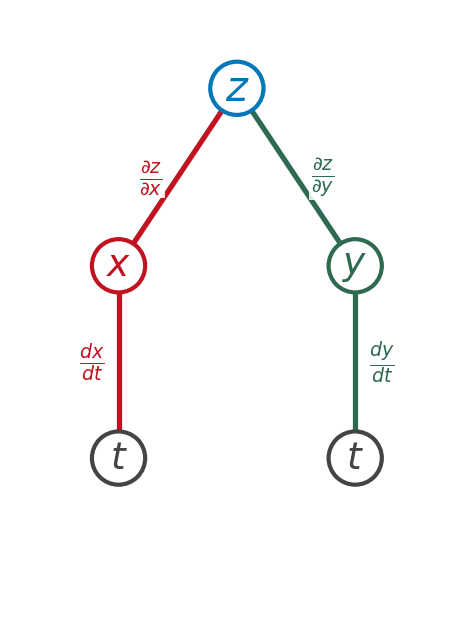
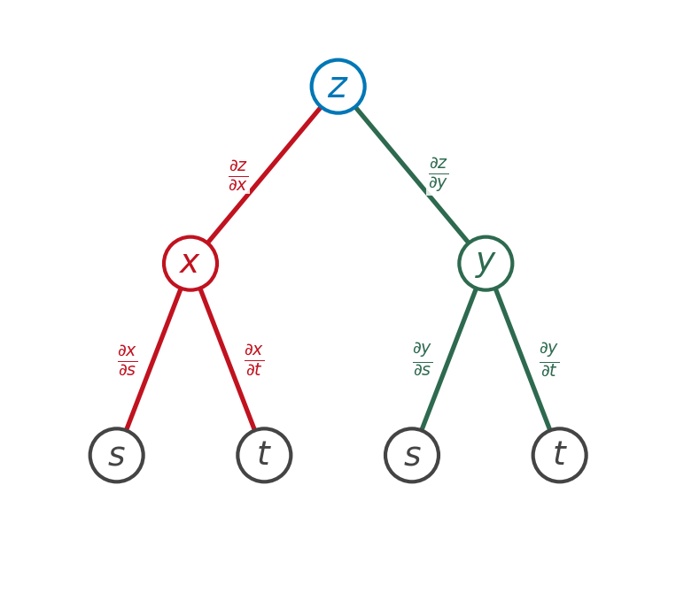

Section 14.5: The Chain Rule
Partial Derivatives
MTH 310
Calculus III
The Chain Rule — From Calc I to Calc III
Case 1: One Independent Variable
Chain Rule (Case 1)
If \(z = f(x, y)\) is differentiable, and \(x = g(t)\), \(y = h(t)\) are differentiable functions of \(t\), then:
\[\frac{dz}{dt} = \frac{\partial z}{\partial x}\frac{dx}{dt} + \frac{\partial z}{\partial y}\frac{dy}{dt}\]

Example 1: One Independent Variable
Example 1
Let \(z = x^2 + y^2 + xy\), where \(x = \sin t\) and \(y = e^t\).
Find \(\dfrac{dz}{dt}\) at \(t = \dfrac{\pi}{4}\).
Your Turn: One Variable Chain Rule
Example 2
Let \(z = e^x \sin y\), where \(x = t^2\) and \(y = 3t\).
Find \(\dfrac{dz}{dt}\).
Case 2: Two Independent Variables
Chain Rule (Case 2)
If \(z = f(x, y)\), \(x = g(s,t)\), \(y = h(s,t)\), all differentiable, then:
\[\frac{\partial z}{\partial s} = \frac{\partial z}{\partial x}\frac{\partial x}{\partial s} + \frac{\partial z}{\partial y}\frac{\partial y}{\partial s}\]
\[\frac{\partial z}{\partial t} = \frac{\partial z}{\partial x}\frac{\partial x}{\partial t} + \frac{\partial z}{\partial y}\frac{\partial y}{\partial t}\]

Example 3: Two Independent Variables
Example 3
Let \(z = x^2 y^3\), where \(x = s\cos t\) and \(y = s\sin t\).
Find \(\dfrac{\partial z}{\partial s}\) when \((s, t) = (2\sqrt{2},\; \pi/4)\).
The General Chain Rule
General Chain Rule
If \(u = f(x_1, x_2, \ldots, x_n)\) where each \(x_i = g_i(t_1, t_2, \ldots, t_m)\), then:
\[\frac{\partial u}{\partial t_j} = \frac{\partial u}{\partial x_1}\frac{\partial x_1}{\partial t_j} + \frac{\partial u}{\partial x_2}\frac{\partial x_2}{\partial t_j} + \cdots + \frac{\partial u}{\partial x_n}\frac{\partial x_n}{\partial t_j}\]
for each \(j = 1, 2, \ldots, m\).
Implicit Differentiation Revisited
Implicit Differentiation Formulas
\[\frac{\partial z}{\partial x} = -\frac{F_x}{F_z} \qquad \text{and} \qquad \frac{\partial z}{\partial y} = -\frac{F_y}{F_z}\]
Why Does \(\partial z / \partial x = -F_x / F_z\) Work?
Example 4: Implicit Differentiation
Example 4
The equation \(x^2 \sin(yz) + 3z = y^2\) defines \(z\) implicitly as a function of \(x\) and \(y\).
Find \(\dfrac{\partial z}{\partial x}\) using both methods.
Your Turn: Implicit Differentiation
Example 5
The equation \(x^3 + y^3 + z^3 + 6xyz = 1\) defines \(z\) implicitly as a function of \(x\) and \(y\).
Find \(\dfrac{\partial z}{\partial x}\) using the formula \(\partial z / \partial x = -F_x / F_z\).